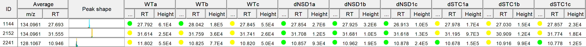
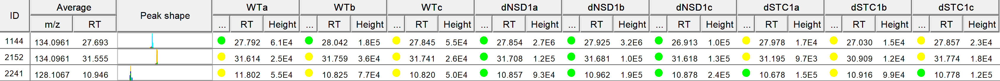

Duplicate filter
Description
Two peaks are considered duplicates when their m/z and retention time differences are lower than
the tolerances set by the user. When two (or more) duplicates are found, a consensus row is created with the lowest row ID of all duplicates. For this consensus
row, all DETECTED features are favored over ESTIMATED (gap-filled) and ESTIMATED are favored over UNKNOWN.
Furthermore, if there are only ESTIMATED features in a raw data file, the highest is chosen.
Notes
This filter might be very helpful to eliminate misaligned feature list rows after the gap-filling process.
As the average retention time and m/z value for two duplicates should be very close after gap-filling. A more restrictive option is to mark all rows as duplicates that share one duplicate feature.
To use this filter, turn off the average option.
Method parameters
- Name sufix
- This is the suffix to identify the new aligned peak list in Peak list frame of desktop.
- Filter average m/z and RT
- If checked: Compares rows with the average m/z and RT (like the old algorithm)
- If not: Compares rows on a raw data file basis. Marks rows as duplicates if two rows share a feature in a raw data file with the same RT and m/z (and identity/charge state)
- M/Z tolerance
- Maximum m/z difference between duplicate peaks.
- RT tolerance
- Maximum retention time difference between duplicate peaks.
- Require same identification
- If the checkbox is selected duplicate peaks must have the same identification.
- Remove source peak list after fitering
- It the checkbox is selected the source peak list will be remove and the filtered version remains.
Aligned, gap-filled feature list prior and after duplicate row filter.
 
